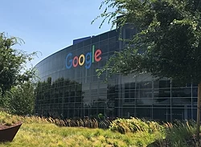

Google LLC is an American multinational technology company that specializes in Internet-related services and products, which include online advertising technologies, search engine, cloud computing, software, and hardware. It is considered one of the Big Four technology companies, alongside Amazon, Apple, and Facebook.[10][11]
Google's logo since 2015[update] | |
|  Google's headquarters, the Googleplex | |
Formerly | Google Inc. (1998–2017) |
|---|---|
| Subsidiary | |
| Industry | |
| Founded | September 4, 1998[a] in Menlo Park, California, U.S. |
| Founders | |
| Headquarters | 1600 Amphitheatre Parkway, , U.S. |
Area served | Worldwide |
Key people | |
| Products | List of Google products |
| Revenue | 66,001,000,000 US dollar[5] (2014) |
| 16,496,000,000 US dollar[5] (2014) | |
| 14,444,000,000 United States dollar[5] (2014) | |
| Total assets | 131,133,000,000 US dollar[5] (2014) |
Number of employees | 114,096 (Q3 2019[update]) |
| Parent | Alphabet Inc. (2015–present) |
| Subsidiaries | List of subsidiaries |
| Website | google.com |
| Footnotes / references [6][7][8][9] | |
Google was founded in September 1998 by Larry Page and Sergey Brin while they were Ph.D. students at Stanford University in California. Together they own about 14 percent of its shares and control 56 percent of the stockholder voting power through supervoting stock. They incorporated Google as a California privately held company on September 4, 1998, in California. Google was then reincorporated in Delaware on October 22, 2002.[12] An initial public offering (IPO) took place on August 19, 2004, and Google moved to its headquarters in Mountain View, California, nicknamed the Googleplex. In August 2015, Google announced plans to reorganize its various interests as a conglomerate called Alphabet Inc. Google is Alphabet's leading subsidiary and will continue to be the umbrella company for Alphabet's Internet interests. Sundar Pichai was appointed CEO of Google, replacing Larry Page who became the CEO of Alphabet.
The company's rapid growth since incorporation has triggered a chain of products, acquisitions, and partnerships beyond Google's core search engine (Google Search). It offers services designed for work and productivity (Google Docs, Google Sheets, and Google Slides), email (Gmail), scheduling and time management (Google Calendar), cloud storage (Google Drive), instant messaging and video chat (Duo, Hangouts), language translation (Google Translate), mapping and navigation (Google Maps, Waze, Google Earth, Street View), video sharing (YouTube), note-taking (Google Keep), and photo organizing and editing (Google Photos). The company leads the development of the Android mobile operating system, the Google Chrome web browser, and Chrome OS, a lightweight operating system based on the Chrome browser. Google has moved increasingly into hardware; from 2010 to 2015, it partnered with major electronics manufacturers in the production of its Nexus devices, and it released multiple hardware products in October 2016, including the Google Pixel smartphone, Google Home smart speaker, Google Wifi mesh wireless router, and Google Daydream virtual reality headset. Google has also experimented with becoming an Internet carrier (Google Fiber, Google Fi, and Google Station).[13]
Google.com is the most visited website in the world.[14] Several other Google services also figure in the top 100 most visited websites, including YouTube and Blogger. Google was the most valuable brand in the world as of 2017,[update][15] but has received significant criticism involving issues such as privacy concerns, tax avoidance, antitrust, censorship, and search neutrality. Google's mission statement is "to organize the world's information and make it universally accessible and useful". The company's unofficial slogan "Don't be evil" was removed from the company's code of conduct around May 2018, but reinstated by July 31, 2018.[16][17]
History
Early years

Google began in January 1996 as a research project by Larry Page and Sergey Brin when they were both PhD students at Stanford University in Stanford, California.[18] The project initially involved an unofficial "third founder", Scott Hassan, the original lead programmer who wrote much of the code for the original Google Search engine, but he left before Google was officially founded as a company;[19][20] Hassan went on to pursue a career in robotics and founded the company Willow Garage in 2006.[21][22]
While conventional search engines ranked results by counting how many times the search terms appeared on the page, they theorized about a better system that analyzed the relationships among websites.[23] They called this algorithm PageRank; it determined a website's relevance by the number of pages, and the importance of those pages that linked back to the original site.[24][25] Page told his ideas to Hassan, who began writing the code to implement Page's ideas.[19]
Page and Brin originally nicknamed the new search engine "BackRub", because the system checked backlinks to estimate the importance of a site.[26][27][28] Hassan as well as Alan Steremberg were cited by Page and Brin as being critical to the development of Google. Rajeev Motwani and Terry Winograd later co-authored with Page and Brin the first paper about the project, describing PageRank and the initial prototype of the Google search engine, published in 1998. Héctor García-Molina and Jeff Ullman were also cited as contributors to the project.[29] PageRank was influenced by a similar page-ranking and site-scoring algorithm earlier used for RankDex, developed by Robin Li in 1996, with Larry Page's PageRank patent including a citation to Li's earlier RankDex patent; Li later went on to create the Chinese search engine Baidu.[30][31][32]
Eventually, they changed the name to Google; the name of the search engine originated from a misspelling of the word "googol",[33][34] the number 1 followed by 100 zeros, which was picked to signify that the search engine was intended to provide large quantities of information.[35]

The domain name for Google was registered on September 15, 1997,[37] and the company was incorporated on September 4, 1998. It was based in the garage of a friend (Susan Wojcicki[18]) in Menlo Park, California. Craig Silverstein, a fellow PhD student at Stanford, was hired as the first employee.[18][38][39]
Google was initially funded by an August 1998 contribution of $100,000 from Andy Bechtolsheim, co-founder of Sun Microsystems; the money was given before Google was incorporated.[40] Google received money from three other angel investors in 1998: Amazon.com founder Jeff Bezos, Stanford University computer science professor David Cheriton, and entrepreneur Ram Shriram.[41] Between these initial investors, friends, and family Google raised around 1 million dollars, which is what allowed them to open up their original shop in Menlo Park, California [42]
After some additional, small investments through the end of 1998 to early 1999,[41] a new $25 million round of funding was announced on June 7, 1999,[43] with major investors including the venture capital firms Kleiner Perkins and Sequoia Capital.[40]
Growth
In March 1999, the company moved its offices to Palo Alto, California,[44] which is home to several prominent Silicon Valley technology start-ups.[45] The next year, Google began selling advertisements associated with search keywords against Page and Brin's initial opposition toward an advertising-funded search engine.[46][18] To maintain an uncluttered page design, advertisements were solely text-based.[47] In June 2000, it was announced that Google would become the default search engine provider for Yahoo!, one of the most popular websites at the time, replacing Inktomi.[48][49]

In 2003, after outgrowing two other locations, the company leased an office complex from Silicon Graphics, at 1600 Amphitheatre Parkway in Mountain View, California.[51] The complex became known as the Googleplex, a play on the word googolplex, the number one followed by a googol zeroes. Three years later, Google bought the property from SGI for $319 million.[52] By that time, the name "Google" had found its way into everyday language, causing the verb "google" to be added to the Merriam-Webster Collegiate Dictionary and the Oxford English Dictionary, denoted as: "to use the Google search engine to obtain information on the Internet".[53][54] Additionally, in 2001 Google's Investors felt the need to have a strong internal management, and they agreed to hire Eric Schmidt as the Chairman and CEO of Google [55]
Initial public offering
Google's initial public offering (IPO) took place five years later, on August 19, 2004. At that time Larry Page, Sergey Brin, and Eric Schmidt agreed to work together at Google for 20 years, until the year 2024.[56] At IPO, the company offered 19,605,052 shares at a price of $85 per share.[57][58] Shares were sold in an online auction format using a system built by Morgan Stanley and Credit Suisse, underwriters for the deal.[59][60] The sale of $1.67 billion gave Google a market capitalization of more than $23 billion.[61]

In October 2006, Google announced that it had acquired the video-sharing site YouTube for $1.65 billion in Google stock,[62][63] and the deal was finalized on November 13, 2006.[64][65] On April 13, 2007, Google reached an agreement to acquire DoubleClick for $3.1 billion, transferring to Google valuable relationships that DoubleClick had with Web publishers and advertising agencies.[66]
In 2005, The Washington Post reported on a 700 percent increase in third-quarter profit for Google, largely thanks to large companies shifting their advertising strategies from newspapers, magazines, and television to the Internet.[67] In May 2011, the number of monthly unique visitors to Google surpassed one billion for the first time.[68] By 2011, Google was handling approximately 3 billion searches per day. To handle this workload, Google built 11 data centers around the world with some several thousand servers in each. These data centers allowed Google to handle the ever changing workload more efficiently.[55]
On August 15, 2011, Google made its largest-ever acquisition to date when it announced that it would acquire Motorola Mobility for $12.5 billion[69][70] This purchase was made in part to help Google gain Motorola's considerable patent portfolio on mobile phones and wireless technologies, to help protect Google in its ongoing patent disputes with other companies,[71] mainly Apple and Microsoft,[72] and to allow it to continue to freely offer Android.[73]
2012 onward
The year 2012 was the first time that Google generated $50 billion in annual revenue, generating $38 billion the previous year. In January 2013, then-CEO Larry Page commented, "We ended 2012 with a strong quarter ... Revenues were up 36% year-on-year, and 8% quarter-on-quarter. And we hit $50 billion in revenues for the first time last year – not a bad achievement in just a decade and a half."[74]
In June 2013, Google acquired Waze, a $966 million deal.[75] While Waze would remain an independent entity, its social features, such as its crowdsourced location platform, were reportedly valuable integrations between Waze and Google Maps, Google's own mapping service.[76]
Google announced the launch of a new company, called Calico, on September 19, 2013, to be led by Apple, Inc. chairman Arthur Levinson. In the official public statement, Page explained that the "health and well-being" company would focus on "the challenge of ageing and associated diseases".[77]

On January 26, 2014, Google announced it had agreed to acquire DeepMind Technologies, a privately held artificial intelligence company from London.[78] Technology news website Recode reported that the company was purchased for $400 million though it was not disclosed where the information came from. A Google spokesman would not comment of the price.[79][80] The purchase of DeepMind aids in Google's recent growth in the artificial intelligence and robotics community.[81]
According to Interbrand's annual Best Global Brands report, Google has been the second most valuable brand in the world (behind Apple Inc.) in 2013,[82] 2014,[83] 2015,[84] and 2016, with a valuation of $133 billion.[85]
On August 10, 2015, Google announced plans to reorganize its various interests as a conglomerate called Alphabet. Google became Alphabet's leading subsidiary, and will continue to be the umbrella company for Alphabet's Internet interests. Upon completion of the restructure, Sundar Pichai became CEO of Google, replacing Larry Page, who became CEO of Alphabet.[86][87][88]
As of October 2016,[update] Google operates 70 offices in more than 40 countries.[89] Alexa, a company that monitors commercial web traffic, lists Google.com as the most visited website in the world.[14] Several other Google services also figure in the top 100 most visited websites, including YouTube[90] and Blogger.[91]
On August 8, 2017, Google fired employee James Damore after he distributed a memo throughout the company which argued that bias and "Google's ideological echo chamber" clouded their thinking about diversity and inclusion, and that it is also biological factors, not discrimination alone, that cause the average woman to be less interested than men in technical positions.[92] Google CEO Sundar Pichai accused Damore in violating company policy by "advancing harmful gender stereotypes in our workplace", and he was fired on the same day.[93][94][95] New York Times columnist David Brooks argued Pichai had mishandled the case, and called for his resignation.[96][97]
Between 2018 and 2019, tensions between the company's leadership and its workers escalated as staff protested company decisions on internal sexual harassment, a censored Chinese search engine, and a military drone artificial intelligence, which had been seen as areas of revenue growth for the company.[98][99] On October 25, 2018, The New York Times published the exposé, "How Google Protected Andy Rubin, the ‘Father of Android’". The company subsequently announced that "48 employees have been fired over the last two years" for sexual misconduct.[100] On November 1, 2018, more than 20,000 Google employees and contractors staged a global walk-out to protest the company's handling of sexual harassment complaints.[101][102] Later in 2019, some workers accused the company of retaliating against internal activists.[99]
On March 19, 2019, Google announced that it would enter the video game market, launching a cloud gaming platform called Stadia.[103]
On June 3, 2019, the United States Department of Justice reported that it would investigate Google for antitrust violations.[104]
In December 2019, it was reported that former PayPal Chief Operating Officer Bill Ready would become Google's new commerce chief. Ready's role won't be directly involved with Google Pay.[105]
Products and services
Search engine

Google indexes billions of web pages to allow users to search for the information they desire through the use of keywords and operators.[106] According to comScore market research from November 2009, Google Search is the dominant search engine in the United States market, with a market share of 65.6%.[107] In May 2017, Google enabled a new "Personal" tab in Google Search, letting users search for content in their Google accounts' various services, including email messages from Gmail and photos from Google Photos.[108][109]
Google launched its Google News service in 2002, an automated service which summarizes news articles from various websites.[110] Google also hosts Google Books, a service which searches the text found in books in its database and shows limited previews or and the full book where allowed.[111]
Advertising
.JPG)
As per its 2017 Annual report, Google generates most of its revenues from advertising. This includes sales of apps, purchases made in-app, digital content products on google and YouTube, android and licensing and service fees, including fees received for Google Cloud offerings. 46% of this was from clicks (cost per clicks), amounting to US$109,652 million in 2017. This includes three principal methods, namely AdMob, AdSense (such as AdSense for Content, AdSense for Search, etc.) and DoubleClick AdExchange.[112]
For the 2006 fiscal year, the company reported $10.492 billion in total advertising revenues and only $112 million in licensing and other revenues.[113] In 2011, 96% of Google's revenue was derived from its advertising programs.[114] In addition to its own algorithms for understanding search requests, Google uses technology from the company DoubleClick, to project user interest and target advertising to the search context and the user history.[115][116]
In 2007, Google launched "AdSense for Mobile", taking advantage of the emerging mobile advertising market.[117]
Google Analytics allows website owners to track where and how people use their website, for example by examining click rates for all the links on a page.[118] Google advertisements can be placed on third-party websites in a two-part program. Google Ads allows advertisers to display their advertisements in the Google content network, through a cost-per-click scheme.[119] The sister service, Google AdSense, allows website owners to display these advertisements on their website and earn money every time ads are clicked.[120] One of the criticisms of this program is the possibility of click fraud, which occurs when a person or automated script clicks on advertisements without being interested in the product, causing the advertiser to pay money to Google unduly. Industry reports in 2006 claimed that approximately 14 to 20 percent of clicks were fraudulent or invalid.[121] Google Search Console (rebranded from Google Webmaster Tools in May 2015) allows webmasters to check the sitemap, crawl rate, and for security issues of their websites, as well as optimize their website's visibility.
Consumer services
Web-based services
Google offers Gmail for email,[122] Google Calendar for time-management and scheduling,[123] Google Maps for mapping, navigation and satellite imagery,[124] Google Drive for cloud storage of files,[125] Google Docs, Sheets and Slides for productivity,[125] Google Photos for photo storage and sharing,[126] Google Keep for note-taking,[127] Google Translate for language translation,[128] YouTube for video viewing and sharing,[129] Google My Business for managing public business information,[130] and Duo for social interaction.[131] In March 2019, Google unveiled a cloud gaming service named Stadia.[103]
Software
Google develops the Android mobile operating system,[132] as well as its smartwatch,[133] television,[134] car,[135] and Internet of things-enabled smart devices variations.[136]
It also develops the Google Chrome web browser,[137] and Chrome OS, an operating system based on Chrome.[138]
Hardware
In January 2010, Google released Nexus One, the first Android phone under its own brand, "Nexus".[139] It spawned a number of phones and tablets under the "Nexus" branding[140] until its eventual discontinuation in 2016, replaced by a new brand called Pixel.[141]
In 2011, the Chromebook was introduced, described as a "new kind of computer" running Chrome OS.[142]
In July 2013, Google introduced the Chromecast dongle, that allows users to stream content from their smartphones to televisions.[143][144]
In June 2014, Google announced Google Cardboard, a simple cardboard viewer that lets user place their smartphone in a special front compartment to view virtual reality (VR) media.[145][146]
- The Pixel and Pixel XL smartphones with the Google Assistant, a next-generation contextual voice assistant, built-in.[147]
- Google Home, an Amazon Echo-like voice assistant placed in the house that can answer voice queries, play music, find information from apps (calendar, weather etc.), and control third-party smart home appliances (users can tell it to turn on the lights, for example). The Google Home line also includes variants such as the Google Home Hub, Google Home Mini, and Google Home Max[148]
- Daydream View virtual reality headset that lets Android users with compatible Daydream-ready smartphones put their phones in the headset and enjoy VR content.[149]
- Google Wifi, a connected set of Wi-Fi routers to simplify and extend coverage of home Wi-Fi.[150]
Enterprise services
G Suite is a monthly subscription offering for organizations and businesses to get access to a collection of Google's services, including Gmail, Google Drive and Google Docs, Google Sheets and Google Slides, with additional administrative tools, unique domain names, and 24/7 support.[151]
On September 24, 2012,[152] Google launched Google for Entrepreneurs, a largely not-for-profit business incubator providing startups with co-working spaces known as Campuses, with assistance to startup founders that may include workshops, conferences, and mentorships.[153] Presently, there are 7 Campus locations in Berlin, London, Madrid, Seoul, São Paulo, Tel Aviv, and Warsaw.
On March 15, 2016, Google announced the introduction of Google Analytics 360 Suite, "a set of integrated data and marketing analytics products, designed specifically for the needs of enterprise-class marketers" which can be integrated with BigQuery on the Google Cloud Platform. Among other things, the suite is designed to help "enterprise class marketers" "see the complete customer journey", generate "useful insights", and "deliver engaging experiences to the right people".[154] Jack Marshall of The Wall Street Journal wrote that the suite competes with existing marketing cloud offerings by companies including Adobe, Oracle, Salesforce, and IBM.[155]
Internet services
In February 2010, Google announced the Google Fiber project, with experimental plans to build an ultra-high-speed broadband network for 50,000 to 500,000 customers in one or more American cities.[156][157] Following Google's corporate restructure to make Alphabet Inc. its parent company, Google Fiber was moved to Alphabet's Access division.[158][159]
In April 2015, Google announced Project Fi, a mobile virtual network operator, that combines Wi-Fi and cellular networks from different telecommunication providers in an effort to enable seamless connectivity and fast Internet signal.[160][161][162]
In September 2016, Google began its Google Station initiative, a project for public Wi-Fi at railway stations in India. Caesar Sengupta, VP for Google's next billion users, told The Verge that 15,000 people get online for the first time thanks to Google Station and that 3.5 million people use the service every month. The expansion meant that Google was looking for partners around the world to further develop the initiative, which promised "high-quality, secure, easily accessible Wi-Fi".[163] By December, Google Station had been deployed at 100 railway stations,[164] and in February, Google announced its intention to expand beyond railway stations, with a plan to bring citywide Wi-Fi to Pune.[165][166]
Other products
In May 2011, Google announced Google Wallet, a mobile application for wireless payments.[167]
In 2013, Google launched Google Shopping Express, a delivery service initially available only in San Francisco and Silicon Valley.[168]
Corporate affairs
Finance

Google's initial public offering (IPO) took place on August 19, 2004. At IPO, the company offered 19,605,052 shares at a price of $85 per share.[57][58] The sale of $1.67 billion gave Google a market capitalization of more than $23 billion.[61] The stock performed well after the IPO, with shares hitting $350 for the first time on October 31, 2007,[169] primarily because of strong sales and earnings in the online advertising market.[170] The surge in stock price was fueled mainly by individual investors, as opposed to large institutional investors and mutual funds.[170] GOOG shares split into GOOG class C shares and GOOGL class A shares.[171] The company is listed on the NASDAQ stock exchange under the ticker symbols GOOGL and GOOG, and on the Frankfurt Stock Exchange under the ticker symbol GGQ1. These ticker symbols now refer to Alphabet Inc., Google's holding company, since the fourth quarter of 2015.[update][172]
The corporation's consolidated revenue for the third quarter of 2013 was reported in mid-October 2013 as $14.89 billion, a 12 percent increase compared to the previous quarter.[173] Google's Internet business was responsible for $10.8 billion of this total, with an increase in the number of users' clicks on advertisements.[174] By January 2014, Google's market capitalization had grown to $397 billion.[175]
Google uses various tax avoidance strategies. Out of the five largest American technology companies, it pays the lowest taxes to the countries of origin of its revenues. Google between 2007 and 2010 saved $3.1 billion in taxes by shuttling non-U.S. profits through Ireland and the Netherlands and then to Bermuda. Such techniques lower its non-U.S. tax rate to 2.3 per cent, while normally the corporate tax rate in for instance the UK is 28 per cent.[176] This has reportedly sparked a French investigation into Google's transfer pricing practices.[177]
Google said it overhauled its controversial global tax structure and consolidated all of its intellectual property holdings back to the US. [178]
Google Vice-President Matt Brittin testified to the Public Accounts Committee of the UK House of Commons that his UK sales team made no sales and hence owed no sales taxes to the UK.[179] In January 2016, Google reached a settlement with the UK to pay £130m in back taxes plus higher taxes in future.[180] In 2017, Google channeled $22.7 billion from the Netherlands to Bermuda to reduce its tax bill.[181]
In 2013, Google ranked 5th in lobbying spending, up from 213th in 2003. In 2012, the company ranked 2nd in campaign donations of technology and Internet sections.[182]
Corporate identity

The name "Google" originated from a misspelling of "googol",[183][184] which refers to the number represented by a 1 followed by one-hundred zeros. Page and Brin write in their original paper on PageRank:[29] "We chose our systems name, Google, because it is a common spelling of googol, or 10100 and fits well with our goal of building very large-scale search engines." Having found its way increasingly into everyday language, the verb "google" was added to the Merriam Webster Collegiate Dictionary and the Oxford English Dictionary in 2006, meaning "to use the Google search engine to obtain information on the Internet."[185][186] Google's mission statement, from the outset, was "to organize the world's information and make it universally accessible and useful",[187] and its unofficial slogan is "Don't be evil".[188] In October 2015, a related motto was adopted in the Alphabet corporate code of conduct by the phrase: "Do the right thing".[189] The original motto was retained in the code of conduct of Google, now a subsidiary of Alphabet.[16]
The original Google logo was designed by Sergey Brin.[190] Since 1998,[update] Google has been designing special, temporary alternate logos to place on their homepage intended to celebrate holidays, events, achievements and people. The first Google Doodle was in honor of the Burning Man Festival of 1998.[191][192] The doodle was designed by Larry Page and Sergey Brin to notify users of their absence in case the servers crashed. Subsequent Google Doodles were designed by an outside contractor, until Larry and Sergey asked then-intern Dennis Hwang to design a logo for Bastille Day in 2000. From that point onward, Doodles have been organized and created by a team of employees termed "Doodlers".[193]
Google has a tradition of creating April Fools' Day jokes. Its first on April 1, 2000 was Google MentalPlex which allegedly featured the use of mental power to search the web.[194] In 2007, Google announced a free Internet service called TiSP, or Toilet Internet Service Provider, where one obtained a connection by flushing one end of a fiber-optic cable down their toilet.[195]
Google's services contain easter eggs, such as the Swedish Chef's "Bork bork bork," Pig Latin, "Hacker" or leetspeak, Elmer Fudd, Pirate, and Klingon as language selections for its search engine.[196] When searching for the word "anagram," meaning a rearrangement of letters from one word to form other valid words, Google's suggestion feature displays "Did you mean: nag a ram?"[197]
Workplace culture

On Fortune magazine's list of the best companies to work for, Google ranked first in 2007, 2008 and 2012,[198][199][200] and fourth in 2009 and 2010.[201][202] Google was also nominated in 2010 to be the world's most attractive employer to graduating students in the Universum Communications talent attraction index.[203] Google's corporate philosophy includes principles such as "you can make money without doing evil," "you can be serious without a suit," and "work should be challenging and the challenge should be fun."[204]
As of December 2018,[update] Google has 98,771 employees.[9] Google's 2017[update] diversity report states that 31 percent of its workforce are women and 69 percent are men, with the ethnicity of its workforce being predominantly white (56%) and Asian (35%).[205] Within tech roles, however, 20 percent were women; and 25 percent of leadership roles were held by women.[205]
Google's employees are hired based on a hierarchical system. Employees are split into six hierarchies based on experience and can range "from entry-level data center workers at level one to managers and experienced engineers at level six."[206] As a motivation technique, Google uses a policy known as Innovation Time Off, where Google engineers are encouraged to spend 20% of their work time on projects that interest them. Some of Google's services, such as Gmail, Google News, Orkut, and AdSense originated from these independent endeavors.[207] In a talk at Stanford University, Marissa Mayer, Google's Vice-President of Search Products and User Experience until July 2012, showed that half of all new product launches in the second half of 2005 had originated from the Innovation Time Off.[208]
In 2005, articles in The New York Times[209] and other sources began suggesting that Google had lost its anti-corporate, no evil philosophy.[210][211][212] In an effort to maintain the company's unique culture, Google designated a Chief Culture Officer whose purpose was to develop and maintain the culture and work on ways to keep true to the core values that the company was founded on.[213] Google has also faced allegations of sexism and ageism from former employees.[214][215] In 2013, a class action against several Silicon Valley companies, including Google, was filed for alleged "no cold call" agreements which restrained the recruitment of high-tech employees.[216]
Office locations

.jpg)
Google's headquarters in Mountain View, California is referred to as "the Googleplex", a play on words on the number googolplex and the headquarters itself being a complex of buildings. Internationally, Google has over 78 offices in more than 50 countries.[217]
In 2006, Google moved into about 300,000 square feet (27,900 m2) of office space in New York City, at 111 Eighth Avenue in Manhattan. The office was designed and built specially for Google, and houses its largest advertising sales team, which has been instrumental in securing large partnerships.[218] In 2010, Google bought the building housing the headquarter, in a deal that valued the property at around $1.9 billion.[219][220] In March 2018, Google's parent company Alphabet bought the nearby Chelsea Market building for $2.4 billion. The sale is touted as one of the most expensive real estate transactions for a single building in the history of New York.[221][222][223][224] In November 2018, Google announced its plan to expand its New York City office to a capacity of 12,000 employees.[225] The same December, it was announced that a $1 billion, 1,700,000-square-foot (160,000 m2) headquarters for Google would be built in Manhattan's Hudson Square neighborhood.[226][227] Called Google Hudson Square, the new campus is projected to more than double the number of Google employees working in New York City.[228]
By late 2006, Google established a new headquarters for its AdWords division in Ann Arbor, Michigan.[229] In November 2006, Google opened offices on Carnegie Mellon's campus in Pittsburgh, focusing on shopping-related advertisement coding and smartphone applications and programs.[230][231] Other office locations in the U.S. include Atlanta, Georgia; Austin, Texas; Boulder, Colorado; Cambridge, Massachusetts; San Francisco, California; Seattle, Washington; Kirkland, Washington; Birmingham, Michigan; Reston, Virginia, and Washington, D.C.[232]

{kind=link}
.jpg){kind=link}
.jpg){kind=link}
It also has product research and development operations in cities around the world, namely Sydney (birthplace location of Google Maps)[233] and London (part of Android development).[234] In November 2013, Google announced plans for a new London headquarter, a 1 million square foot office able to accommodate 4,500 employees. Recognized as one of the biggest ever commercial property acquisitions at the time of the deal's announcement in January,[235] Google submitted plans for the new headquarter to the Camden Council in June 2017.[236][237] In May 2015, Google announced its intention to create its own campus in Hyderabad, India. The new campus, reported to be the company's largest outside the United States, will accommodate 13,000 employees.[238][239]
Infrastructure
Google data centers are located in North and South America, Asia, and Europe.[240] There is no official data on the number of servers in Google data centers; however, research and advisory firm Gartner estimated in a July 2016 report that Google at the time had 2.5 million servers.[241] Traditionally, Google relied on parallel computing on commodity hardware like mainstream x86 computers (similar to home PCs) to keep costs per query low.[242][243][244] In 2005, it started developing its own designs, which were only revealed in 2009.[244]
In the late 2010s, Google began to build its own private submarine communications cables. The first, named Curie, connects California with Chile and is to be completed in 2019.[245] The second fully Google-owned undersea cable, named Dunant, connects the United States with France and is planned to begin operation in 2020.[246]
Environment
In October 2006, the company announced plans to install thousands of solar panels to provide up to 1.6 megawatts of electricity, enough to satisfy approximately 30% of the campus' energy needs.[247] The system will be the largest solar power system constructed on a U.S. corporate campus and one of the largest on any corporate site in the world.[247] Since 2007,[update] Google has aimed for carbon neutrality in regard to its operations.[248]
Google disclosed in September 2011 that it "continuously uses enough electricity to power 200,000 homes", almost 260 million watts or about a quarter of the output of a nuclear power plant. Total carbon emissions for 2010 were just under 1.5 million metric tons, mostly due to fossil fuels that provide electricity for the data centers. Google said that 25 percent of its energy was supplied by renewable fuels in 2010. An average search uses only 0.3 watt-hours of electricity, so all global searches are only 12.5 million watts or 5% of the total electricity consumption by Google.[249]
In 2010, Google Energy made its first investment in a renewable energy project, putting $38.8 million into two wind farms in North Dakota. The company announced the two locations will generate 169.5 megawatts of power, enough to supply 55,000 homes.[250] In February 2010, the Federal Energy Regulatory Commission FERC granted Google an authorization to buy and sell energy at market rates.[251] The corporation exercised this authorization in September 2013 when it announced it would purchase all the electricity produced by the not-yet-built 240-megawatt Happy Hereford wind farm.[252]
In July 2010, Google signed an agreement with an Iowa wind farm to buy 114 megawatts of energy for 20 years.[253]
In December 2016, Google announced that—starting in 2017—it will power all of its data centers, as well as all of its offices, from 100% renewable energy. The commitment will make Google "the world's largest corporate buyer of renewable power, with commitments reaching 2.6 gigawatts (2,600 megawatts) of wind and solar energy". Google also stated that it does not count that as its final goal; it says that "since the wind doesn't blow 24 hours a day, we'll also broaden our purchases to a variety of energy sources that can enable renewable power, every hour of every day". Additionally, the project will "help support communities" around the world, as the purchase commitments will "result in infrastructure investments of more than $3.5 billion globally", and will "generate tens of millions of dollars per year in revenue to local property owners, and tens of millions more to local and national governments in tax revenue".[254][255][256]
In November 2017, Google bought 536 megawatts of wind power. The purchase made the firm reach 100% renewable energy. The wind energy comes from two power plants in South Dakota, one in Iowa and one in Oklahoma.[257]
In September 2019, Google's chief executive announced plans for a $2 billion wind and solar investment, the biggest renewable energy deal in corporate history. This will grow their green energy profile by 40%, giving them an extra 1.6 gigawatt of clean energy, the company said.[258]
Philanthropy
In 2004, Google formed the not-for-profit philanthropic Google.org, with a start-up fund of $1 billion.[259] The mission of the organization is to create awareness about climate change, global public health, and global poverty. One of its first projects was to develop a viable plug-in hybrid electric vehicle that can attain 100 miles per gallon. Google hired Larry Brilliant as the program's executive director in 2004[260] and Megan Smith has since[update] replaced him as director.[261]
In 2008, Google announced its "project 10100" which accepted ideas for how to help the community and then allowed Google users to vote on their favorites.[262] After two years of silence, during which many wondered what had happened to the program,[263] Google revealed the winners of the project, giving a total of ten million dollars to various ideas ranging from non-profit organizations that promote education to a website that intends to make all legal documents public and online.[264]
In March 2007, in partnership with the Mathematical Sciences Research Institute (MSRI), Google hosted the first Julia Robinson Mathematics Festival at its headquarters in Mountain View.[265] In 2011, Google donated 1 million euros to International Mathematical Olympiad to support the next five annual International Mathematical Olympiads (2011–2015).[266][267] In July 2012, Google launched a "Legalize Love" campaign in support of gay rights.[268]
Criticism and controversy
This section should include a better summary of Criticism of Google. See Wikipedia:Summary style for information on how to properly incorporate it into this article's main text. (April 2019) |

Google's market dominance has led to prominent media coverage, including criticism of the company over issues such as aggressive tax avoidance,[269] search neutrality, copyright, censorship of search results and content,[270] and privacy.[271][272] Other criticisms include alleged misuse and manipulation of search results, its use of others' intellectual property, concerns that its compilation of data may violate people's privacy, and the energy consumption of its servers, as well as concerns over traditional business issues such as monopoly, restraint of trade, anti-competitive practices, and patent infringement.
Google formerly adhered to the Internet censorship policies of China,[273] enforced by means of filters colloquially known as "The Great Firewall of China", but no longer does so. As a result, all Google services except for Chinese Google Maps are blocked from access within mainland China without the aid of VPNs, proxy servers, or other similar technologies. The Intercept reported in August 2018 that Google is developing for the People's Republic of China a censored version of its search engine (known as Dragonfly) "that will blacklist websites and search terms about human rights, democracy, religion, and peaceful protest".[274][275] However, the project had been withheld due to privacy concerns.[276]
Following media reports about PRISM, NSA's massive electronic surveillance program, in June 2013, several technology companies were identified as participants, including Google.[277] According to leaks of said program, Google joined the PRISM program in 2009.[278]
Google has worked with the United States Department of Defense on drone software through the 2017 "Project Maven" that could be used to improve the accuracy of drone strikes.[279] Thousands of Google employees, including senior engineers, have signed a letter urging Google CEO Sundar Pichai to end a controversial contract with the Pentagon.[280] In response to the backlash, Google ultimately decided to not renew their DoD contract, set to expire in 2019.[281]
Shona Ghosh, a journalist for Business Insider, noted that an increasing digital resistance movement against Google has grown. A major hub for critics of Google in order to organize to abstain from using Google products is the Reddit page for the subreddit /r/degoogle.[282]
In July 2018, Mozilla Program Manager Chris Peterson accused Google of intentionally slowing down YouTube performance on Firefox.[283]
In April 2019 former Mozilla executive Jonathan Nightingale accused Google of intentionally and systematically sabotaging the Firefox browser over the past decade in order to boost Chrome's adoption.[284]
In November 2019, the Office for Civil Rights of the Department of Health and Human Services began investigation into Project Nightingale, to assess whether the "mass collection of individuals’ medical records" complied with HIPPA.[285] According toThe Wall Street Journal, Google commenced the project in secret, in 2018, with St. Louis-based healthcare company Ascension.[286]
Litigation
Google has been involved in a number of lawsuits including the High-Tech Employee Antitrust Litigation which resulted in Google being one of four companies to pay a $415 million settlement to employees.[287]
On June 27, 2017, the company received a record fine of €2.42 billion from the European Union for "promoting its own shopping comparison service at the top of search results."[288] Commenting on the penalty, New Scientist magazine said: "The hefty sum – the largest ever doled out by the EU's competition regulators – will sting in the short term, but Google can handle it. Alphabet, Google’s parent company, made a profit of $2.5 billion (€2.2 billion) in the first six weeks of 2017 alone. The real impact of the ruling is that Google must stop using its dominance as a search engine to give itself the edge in another market: online price comparisons." The company disputed the ruling.[289]
On July 18, 2018,[290] the European Commission fined Google €4.34 billion for breaching EU antitrust rules. The abuse of dominant position has been referred to Google's constraint applied on Android device manufacturers and network operators to ensure that traffic on Android devices goes to the Google search engine. On October 9, 2018, Google confirmed[291] that it had appealed the fine to the General Court of the European Union.[292]
On January 21, 2019, French data regulator CNIL imposed a record €50 million fine on Google for breaching the European Union's General Data Protection Regulation. The judgment claimed Google had failed to sufficiently inform users of its methods for collecting data to personalize advertising. Google issued a statement saying it was “deeply committed” to transparency and was “studying the decision” before determining its response.[293]
On March 20, 2019, the European Commission imposed a €1.49 billion ($1.69 billion) fine on Google for preventing rivals from being able to “compete and innovate fairly” in the online advertising market.[294] European Union competition commissioner Margrethe Vestager said Google had violated EU antitrust rules by “imposing anti-competitive contractual restrictions on third-party websites” that required them to exclude search results from Google's rivals. Kent Walker, Google's senior vice-president of global affairs, said the company had “already made a wide range of changes to our products to address the Commission’s concerns,” and that "we'll be making further updates to give more visibility to rivals in Europe."[295]
On July 25, 2019, presidential hopeful Tusli Gabbard sued Google for blocking her ads after the presidential debate when she became one of the most searched items on the search engine.[296]
DeGoogle movement
The term "DeGoogle" has grown in use as privacy activists urge users to stop using Google products entirely due to growing privacy concerns.[297][298] The term refers to the act of removing Google from your life.
See also
Notes
- ^ Google was originally incorporated on September 4, 1998, however, since 2002, the company has celebrated its anniversaries on various days in September, most frequently on September 27.[1][2][3] The shift in dates reportedly happened to celebrate index-size milestones in tandem with the birthday.[4]
References
- ^ Fitzpatrick, Alex (September 4, 2014). "Google Used to Be the Company That Did 'Nothing But Search'". Time.
- ^ Telegraph Reporters (September 27, 2019). "When is Google's birthday – and why are people confused?". The Telegraph.
- ^ Griffin, Andrew (September 27, 2019). "Google birthday: The one big problem with the company's celebratory doodle". The Independent.
- ^ Wray, Richard (September 5, 2008). "Happy birthday Google". The Guardian.
- ^ a b c d http://investor.google.com/pdf/2014Q4_google_earnings_data.pdf.
- ^ "Company – Google". January 16, 2015. Archived from the original on January 16, 2015. Retrieved September 13, 2018.
- ^ Claburn, Thomas (September 24, 2008). "Google Founded By Sergey Brin, Larry Page... And Hubert Chang?!?". InformationWeek. UBM plc. Archived from the original on June 28, 2011. Retrieved January 22, 2017.
- ^ "Locations — Google Jobs". Archived from the original on September 30, 2013. Retrieved September 27, 2013.
- ^ a b "Alphabet Announces Fourth Quarter 2018 Results" (PDF) (Press release). Mountain View, California: Alphabet Inc. February 4, 2019. p. 1. Archived (PDF) from the original on February 4, 2019. Retrieved February 4, 2019.
Alphabet Inc. (NASDAQ: GOOG, GOOGL) today announced financial results for the quarter and fiscal year ended December 31, 2018. [...] Q1 2018 financial highlights[:] The following summarizes our consolidated financial results for the quarters ended December 31, 2017 and 2018 [...]: [...] Number of employees [as of] Three Months Ended December 31, 2018 [is] 98,771[.]
- ^ Rivas, Teresa. "Ranking The Big Four Tech Stocks: Google Is No. 1, Apple Comes In Last". www.barrons.com. Archived from the original on December 28, 2018. Retrieved December 27, 2018.
- ^ Ritholtz, Barry (October 31, 2017). "The Big Four of Technology". Bloomberg. Archived from the original on June 26, 2019. Retrieved December 27, 2018.
- ^ "Business Entity Filing". Business Search. October 7, 2002. Archived from the original on August 14, 2019. Retrieved August 14, 2019.
- ^ Byford, Sam (September 27, 2016). "Google Station is a new platform that aims to make public Wi-Fi better". The Verge. Archived from the original on September 3, 2017. Retrieved May 22, 2018.
- ^ a b "google.com Traffic Statistics". Alexa Internet. November 25, 2016. Archived from the original on February 2, 2012. Retrieved November 27, 2016.
- ^ "Google is now the world's most valuable brand". The Independent. February 1, 2017. Archived from the original on August 31, 2017. Retrieved August 31, 2017.
- ^ a b "Google Code of Conduct". Alphabet. Archived from the original on February 11, 2017. Retrieved August 31, 2017.
- ^ Conger, Kate. "Google Removes 'Don't Be Evil' Clause From Its Code of Conduct". Archived from the original on May 25, 2018. Retrieved May 24, 2018.
- ^ a b c d "Our history in depth". Google Company. Archived from the original on April 1, 2012. Retrieved July 15, 2017.
- ^ a b Fisher, Adam (July 10, 2018). "Brin, Page, and Mayer on the Accidental Birth of the Company that Changed Everything". Vanity Fair. Archived from the original on July 4, 2019. Retrieved August 23, 2019.
- ^ McHugh, Josh (January 1, 2003). "Google vs. Evil". Wired. Archived from the original on June 2, 2019. Retrieved August 24, 2019.
- ^ "Willow Garage Founder Scott Hassan Aims To Build A Startup Village". IEEE Spectrum. September 5, 2014. Archived from the original on August 24, 2019. Retrieved September 1, 2019.
- ^ D'Onfro, Jillian (February 13, 2016). "How a billionaire who wrote Google's original code created a robot revolution". Business Insider. Archived from the original on August 24, 2019. Retrieved August 24, 2019.
- ^ Page, Lawrence; Brin, Sergey; Motwani, Rajeev; Winograd, Terry (November 11, 1999). "The PageRank Citation Ranking: Bringing Order to the Web". Stanford University. Archived from the original on November 18, 2009. Retrieved February 15, 2010.
- ^ "Technology Overview". Google, Inc. Archived from the original on February 10, 2010. Retrieved February 15, 2010.
- ^ Page, Larry (August 18, 1997). "PageRank: Bringing Order to the Web". Stanford Digital Library Project. Archived from the original on May 6, 2002. Retrieved November 27, 2010.
- ^ Battelle, John (August 2005). "The Birth of Google". Wired. Archived from the original on October 20, 2012. Retrieved October 12, 2010.
- ^ Trex, Ethan (February 17, 2009). "9 People, Places & Things That Changed Their Names". Mental Floss. Archived from the original on August 10, 2014. Retrieved August 4, 2014.
- ^ "Backrub search engine at Stanford University". Archived from the original on December 24, 1996. Retrieved March 12, 2011.
- ^ a b Brin, Sergey; Page, Lawrence (1998). "The anatomy of a large-scale hypertextual Web search engine" (PDF). Computer Networks and ISDN Systems. 30 (1–7): 107–117. CiteSeerX 10.1.1.115.5930. doi:10.1016/S0169-7552(98)00110-X. ISSN 0169-7552. Archived (PDF) from the original on September 27, 2015. Retrieved April 7, 2019.
- ^ "About: RankDex" Archived 2012-02-02 at WebCite, RankDex
- ^ Altucher, James (March 18, 2011). "10 Unusual Things About Google". Forbes. Archived from the original on June 16, 2019. Retrieved June 16, 2019.
- ^ "Method for node ranking in a linked database". Google Patents. Archived from the original on October 15, 2015. Retrieved October 19, 2015.
- ^ Koller, David (January 2004). "Origin of the name "Google"". Stanford University. Archived from the original on July 4, 2012. Retrieved July 4, 2012.
- ^ Hanley, Rachael (February 12, 2003). "From Googol to Google". The Stanford Daily. Stanford University. Archived from the original on March 27, 2010. Retrieved February 15, 2010.
- ^ "Google! Beta website". Google, Inc. Archived from the original on February 21, 1999. Retrieved October 12, 2010.
- ^ Williamson, Alan (January 12, 2005). "An evening with Google's Marissa Mayer". Alan Williamson. Archived from the original on September 21, 2011. Retrieved July 5, 2010.
- ^ "Google.com WHOIS, DNS, & Domain Info - DomainTools". WHOIS. Archived from the original on March 14, 2016. Retrieved July 11, 2016.
- ^ "Craig Silverstein's website". Stanford University. Archived from the original on October 2, 1999. Retrieved October 12, 2010.
- ^ Kopytoff, Verne (September 7, 2008). "Craig Silverstein grew a decade with Google". San Francisco Chronicle. Hearst Communications, Inc. Archived from the original on October 20, 2012. Retrieved October 12, 2010.
- ^ a b Kopytoff, Verne (April 29, 2004). "For early Googlers, key word is $". San Francisco Chronicle. San Francisco: Hearst Communications. Archived from the original on September 19, 2009. Retrieved February 19, 2010.
- ^ a b Auletta, Ken (2010). Googled: The End of the World as We Know it (Reprint ed.). New York, N.Y.: Penguin Books. ISBN 9780143118046. OCLC 515456623.
On September 7, 1998, the day Google officially incorporated, he [Shriram] wrote out a check for just over $250,000, one of four of this size the founders received.
- ^ Hosch, William L.; Hall, Mark. "Google Inc". Britannica. Britannica. Archived from the original on February 20, 2019. Retrieved March 17, 2019.
- ^ "Google Receives $25 Million in Equity Funding" (Press release). Palo Alto, Calif. June 7, 1999. Archived from the original on February 12, 2001. Retrieved February 16, 2009.
- ^ Weinberger, Matt (October 12, 2015). "38 photos of Google's rise from a Stanford dorm room to world domination". Business Insider. Axel Springer SE. Archived from the original on August 19, 2017. Retrieved July 15, 2017.
- ^ "A building blessed with tech success". CNET. CBS Interactive. Archived from the original on May 23, 2017. Retrieved July 15, 2017.
- ^ Stross, Randall (September 2008). "Introduction". Planet Google: One Company's Audacious Plan to Organize Everything We Know. New York: Free Press. pp. 3–4. ISBN 978-1-4165-4691-7. Retrieved February 14, 2010.
- ^ "Google Launches Self-Service Advertising Program". News from Google. October 23, 2000. Archived from the original on April 1, 2012. Retrieved July 15, 2017.
- ^ Naughton, John (July 2, 2000). "Why's Yahoo gone to Google? Search me". The Guardian. Archived from the original on January 31, 2019. Retrieved January 30, 2019 – via www.theguardian.com.
- ^ "Yahoo! Selects Google as its Default Search Engine Provider – News announcements – News from Google – Google". googlepress.blogspot.com. Archived from the original on January 31, 2019. Retrieved January 30, 2019.
- ^ "Google Server Assembly". Computer History Museum. Archived from the original on July 22, 2010. Retrieved July 4, 2010.
- ^ Olsen, Stephanie (July 11, 2003). "Google's movin' on up". CNET. CBS Interactive. Archived from the original on October 20, 2012. Retrieved February 15, 2010.
- ^ "Google to buy headquarters building from Silicon Graphics". Silicon Valley / San Jose Business Journal. San Jose: American City Business Journals. June 16, 2006. Archived from the original on April 18, 2010. Retrieved February 15, 2010.
- ^ Krantz, Michael (October 25, 2006). "Do You "Google"?". Google, Inc. Archived from the original on May 30, 2012. Retrieved February 17, 2010.
- ^ Bylund, Anders (July 5, 2006). "To Google or Not to Google". msnbc.com. Archived from the original on July 7, 2006. Retrieved February 17, 2010.
- ^ a b Hosch, William L.; Hall, Mark. "Google Inc". Britannica. Britannica. Archived from the original on February 20, 2019. Retrieved March 17, 2019.
- ^ Lashinsky, Adam (January 29, 2008). "Google wins again". Fortune. Time Warner. Archived from the original on October 20, 2012. Retrieved January 22, 2011.
- ^ a b Elgin, Ben (August 19, 2004). "Google: Whiz Kids or Naughty Boys?". BusinessWeek. Bloomberg L.P. Archived from the original on June 12, 2009. Retrieved February 19, 2010.
- ^ a b "2004 Annual Report" (PDF). Google, Inc. Mountain View, California. 2004. p. 29. Archived (PDF) from the original on February 2, 2012. Retrieved February 19, 2010.
- ^ La Monica, Paul R. (April 30, 2004). "Google sets $2.7 billion IPO". CNN Money. Archived from the original on October 20, 2012. Retrieved February 19, 2010.
- ^ Kawamoto, Dawn (April 29, 2004). "Want In on Google's IPO?". ZDNet. Archived from the original on February 2, 2012. Retrieved February 19, 2010.
- ^ a b Webb, Cynthia L. (August 19, 2004). "Google's IPO: Grate Expectations". The Washington Post. Washington, D.C. Archived from the original on October 20, 2012. Retrieved February 19, 2010.
- ^ Arrington, Michael (October 9, 2006). "Google Has Acquired YouTube". TechCrunch. AOL. Archived from the original on March 16, 2017. Retrieved March 15, 2017.
- ^ Sorkin, Andrew Ross; Peters, Jeremy W. (October 9, 2006). "Google to Acquire YouTube for $1.65 Billion". The New York Times. Archived from the original on June 9, 2017. Retrieved March 15, 2017.
- ^ Arrington, Michael (November 13, 2006). "Google Closes YouTube Acquisition". TechCrunch. AOL. Archived from the original on March 16, 2017. Retrieved March 15, 2017.
- ^ Auchard, Eric (November 14, 2006). "Google closes YouTube deal". Reuters. Thomson Reuters. Archived from the original on March 16, 2017. Retrieved March 15, 2017.
- ^ Story, Louise; Helft, Miguel (April 14, 2007). "Google Buys DoubleClick for $3.1 Billion". The New York Times. Archived from the original on April 4, 2017. Retrieved March 9, 2017.
- ^ Vise, David (October 21, 2005). "Online Ads Give Google Huge Gain in Profit". The Washington Post. Archived from the original on October 20, 2016. Retrieved November 27, 2016.
- ^ Ben (June 2, 2011). "Google's new record, 1 billion visitors in May". It's All Tech. Archived from the original on January 16, 2013. Retrieved November 30, 2016.
- ^ Tsukayama, Hayley (August 15, 2011). "Google agrees to acquire Motorola Mobility". The Washington Post. Archived from the original on November 13, 2012. Retrieved August 17, 2011.
- ^ "Google to Acquire Motorola Mobility — Google Investor Relations". Google. Archived from the original on August 17, 2011. Retrieved August 17, 2011.
- ^ Page, Larry (August 15, 2011). "Official Google Blog: Supercharging Android: Google to Acquire Motorola Mobility". Official Google Blog. Archived from the original on July 28, 2012. Retrieved August 17, 2011.
- ^ Hughes, Neil. "Google CEO: 'Anticompetitive' Apple, Microsoft forced Motorola deal". AppleInsider. Archived from the original on December 10, 2011. Retrieved August 17, 2011.
- ^ Cheng, Roger (August 15, 2011). "Google to buy Motorola Mobility for $12.5B". CNet News. Archived from the original on October 6, 2011. Retrieved August 15, 2011.
- ^ Fiegerman, Seth (January 22, 2013). "Google Has Its First $50 Billion Year". Mashable. Archived from the original on December 1, 2016. Retrieved November 30, 2016.
- ^ Kerr, Dara (July 25, 2013). "Google reveals it spent $966 million in Waze acquisition". CNET. CBS Interactive. Archived from the original on February 16, 2017. Retrieved June 12, 2017.
- ^ Lunden, Ingrid (June 11, 2013). "Google Bought Waze For $1.1B, Giving A Social Data Boost To Its Mapping Business". TechCrunch. AOL. Archived from the original on July 6, 2017. Retrieved June 12, 2017.
- ^ Wakefield, Jane (September 19, 2013). "Google spin-off Calico to search for answers to ageing". BBC News. Archived from the original on September 19, 2013. Retrieved September 20, 2013.
- ^ Chowdhry, Amit (January 27, 2014). "Google To Acquire Artificial Intelligence Company DeepMind". Forbes. Archived from the original on January 29, 2014. Retrieved January 27, 2014.
- ^ Helgren, Chris (January 27, 2014). "Google to buy artificial intelligence company DeepMind". Reuters. Archived from the original on January 27, 2014. Retrieved January 27, 2014.
- ^ Ribeiro, Jon (January 27, 2014). "Google buys artificial intelligence company DeepMind". PC World. Archived from the original on January 30, 2014. Retrieved January 27, 2014.
- ^ Opam, Kwame (January 26, 2014). "Google buying AI startup DeepMind for a reported $400 million". The Verge. Vox Media. Archived from the original on July 8, 2017. Retrieved March 9, 2017.
- ^ "Rankings - 2013 - Best Global Brands - Interbrand". Interbrand. Archived from the original on October 22, 2016. Retrieved October 23, 2016.
- ^ "Rankings - 2014 - Best Global Brands - Interbrand". Interbrand. Archived from the original on November 3, 2016. Retrieved October 23, 2016.
- ^ "Rankings - 2015 - Best Global Brands - Interbrand". Interbrand. Archived from the original on October 21, 2016. Retrieved October 23, 2016.
- ^ "Rankings - 2016 - Best Global Brands". Interbrand. Archived from the original on December 20, 2016. Retrieved October 23, 2016.
- ^ Womack, Brian (August 10, 2015). "Google Rises After Creating Holding Company Called Alphabet". Bloomberg L.P. Archived from the original on November 23, 2016. Retrieved November 22, 2016.
- ^ Barr, Alistair; Winkler, Rolf (August 10, 2015). "Google Creates Parent Company Called Alphabet in Restructuring". The Wall Street Journal. Archived from the original on November 28, 2016. Retrieved November 22, 2016.
- ^ Dougherty, Conor (August 10, 2015). "Google to Reorganize as Alphabet to Keep Its Lead as an Innovator". The New York Times. Archived from the original on October 19, 2016. Retrieved November 22, 2016.
- ^ "Google locations". Google, Inc. Archived from the original on August 15, 2013. Retrieved October 23, 2016.
- ^ "youtube.com Traffic Statistics". Alexa Internet. November 25, 2016. Archived from the original on November 27, 2016. Retrieved November 27, 2016.
- ^ "blogger.com Traffic Statistics". Alexa Internet. November 25, 2016. Archived from the original on November 12, 2016. Retrieved November 27, 2016.
- ^ "Google Fires Engineer Who Wrote Memo Questioning Women in Tech" Archived August 10, 2017, at the Wayback Machine. The New York Times, August 7, 2017
- ^ Contentious Memo Strikes Nerve Inside Google and Out Archived August 9, 2017, at the Wayback Machine. The New York Times, August 8, 2017
- ^ diversitymemo.com
- ^ Friedersdorf, Conor (August 8, 2017). "The Most Common Error in Media Coverage of the Google Memo". Archived from the original on August 8, 2017. Retrieved August 9, 2017.
- ^ Brooks, David (August 11, 2017). "Sundar Pichai Should Resign as Google's C.E.O". The New York Times. Archived from the original on August 11, 2017. Retrieved August 11, 2017.
- ^ "New York Times columnist David Brooks wants Google's CEO to resign". Business Insider. August 11, 2017. Archived from the original on August 12, 2017. Retrieved August 12, 2017.
- ^ Bergen, Mark (November 22, 2019). "Google Workers Protest Company's 'Brute Force Intimidation'". Bloomberg.com.
- ^ a b Hollister, Sean (November 25, 2019). "Google is accused of union busting after firing four employees". The Verge. Retrieved November 26, 2019.
- ^ Welch, Chris (October 25, 2018). "Google says 48 people have been fired for sexual harassment in the last two years". The Verge. Archived from the original on October 31, 2018. Retrieved October 31, 2018.
- ^ Hamilton, Isobel Asher; et al. (November 1, 2018). "PHOTOS: Google employees all over the world left their desk and walked out in protest over sexual misconduct". Business Insider. Archived from the original on November 2, 2018. Retrieved November 6, 2018.
- ^ Segarra, Lisa Marie (November 3, 2018). "More Than 20,000 Google Employees Participated in Walkout Over Sexual Harassment Policy". Fortune. Archived from the original on November 7, 2018. Retrieved November 6, 2018.
- ^ a b Warren, Tom (March 19, 2019). "Google unveils Stadia cloud gaming service, launches in 2019". The Verge. Archived from the original on March 19, 2019. Retrieved April 8, 2019.
- ^ "Google shares take a dive with reports of US DoJ 'competition' probe".
- ^ "PayPal's exiting COO Bill Ready to join Google as its new president of Commerce". TechCrunch. Retrieved December 11, 2019.
- ^ Arrington, Michael (July 25, 2008). "Google's Misleading Blog Post: The Size Of The Web And The Size Of Their Index Are Very Different". TechCrunch. AOL. Archived from the original on March 12, 2017. Retrieved March 9, 2017.
- ^ "comScore Releases November 2009 U.S. Search Engine Rankings". December 16, 2006. Archived from the original on February 25, 2010. Retrieved July 5, 2010.
- ^ Schwartz, Barry (May 26, 2017). "Google Adds Personal Tab To Search Filters". Search Engine Roundtable. RustyBrick. Archived from the original on May 27, 2017. Retrieved May 27, 2017.
- ^ Gartenberg, Chaim (May 26, 2017). "Google adds new Personal tab to search results to show Gmail and Photos content". The Verge. Vox Media. Archived from the original on May 26, 2017. Retrieved May 27, 2017.
- ^ Macht, Joshua (September 30, 2002). "Automatic for the People". Time. Archived from the original on October 22, 2010. Retrieved June 7, 2010.
- ^ Martin, China (November 26, 2007). "Google hit with second lawsuit over Library project". InfoWorld. Archived from the original on May 10, 2011. Retrieved July 5, 2010.
- ^ Annualg report (Alphabet Inc.) - 2017. Alphabet Inc. Investor relations. March 1, 2018. Archived from the original on February 3, 2016. Retrieved December 3, 2018.
- ^ "Form 10-K – Annual Report". SEC. Archived from the original on November 6, 2010. Retrieved July 5, 2010.
- ^ "Google Inc, Form 10-K, Annual Report, Filing Date January 26, 2012" (PDF). secdatabase.com. Archived (PDF) from the original on May 2, 2013. Retrieved March 8, 2013.
- ^ Nakashima, Ellen (August 12, 2008). "Some Web Firms Say They Track Behavior Without Explicit Consent". The Washington Post. Archived from the original on November 12, 2012. Retrieved July 5, 2010.
- ^ Helft, Miguel (March 11, 2009). "Google to Offer Ads Based on Interests". The New York Times. Archived from the original on March 28, 2017. Retrieved March 9, 2017.
- ^ "Google AdSense for Mobile unlocks the potential of the mobile advertising market". Google, Inc. September 17, 2007. Archived from the original on June 20, 2012. Retrieved February 26, 2010.
- ^ Bright, Peter (August 27, 2008). "Surfing on the sly with IE8's new "InPrivate" Internet". Ars Technica. Condé Nast. Archived from the original on March 12, 2017. Retrieved March 9, 2017.
- ^ Beal, Vangie. "AdWords - Google AdWords". Webopedia. QuinStreet Inc. Archived from the original on June 29, 2017. Retrieved May 27, 2017.
- ^ Beal, Vangie. "AdSense - Google AdSense". Webopedia. QuinStreet Inc. Archived from the original on May 2, 2017. Retrieved May 27, 2017.
- ^ Mills, Elinor (July 25, 2006). "Google to offer advertisers click fraud stats". news.cnet.com. CNET. Archived from the original on May 10, 2011. Retrieved July 29, 2006.
- ^ Gayomali, Chris (April 1, 2014). "When Gmail Launched On April 1, 2004, People Thought It Was A Joke". Fast Company. Mansueto Ventures. Archived from the original on October 18, 2017. Retrieved June 12, 2017.
- ^ Vincent, James (January 5, 2017). "Google Calendar update makes it easier to track your New Year's fitness goals". The Verge. Vox Media. Archived from the original on January 13, 2017. Retrieved June 12, 2017.
- ^ Broussard, Mitchel (March 22, 2017). "Google Maps Introduces New Location Sharing Feature With Real-Time Friend Tracking". MacRumors. Archived from the original on March 27, 2017. Retrieved June 12, 2017.
- ^ a b Sottek, T.C. (April 24, 2012). "Google Drive officially launches with 5GB free storage, Google Docs integration". The Verge. Vox Media. Archived from the original on December 26, 2016. Retrieved June 12, 2017.
- ^ Perez, Sarah (May 28, 2015). "Google Photos Breaks Free Of Google+, Now Offers Free, Unlimited Storage". TechCrunch. AOL. Archived from the original on July 6, 2017. Retrieved June 12, 2017.
- ^ Graziano, Dan (March 20, 2013). "Google launches Google Keep note-taking service [video]". BGR. Penske Media Corporation. Archived from the original on October 8, 2016. Retrieved June 12, 2017.
- ^ Eadicicco, Lisa (November 16, 2016). "Google's Translation App Is About To Get Much Better". Time. Archived from the original on April 1, 2017. Retrieved June 12, 2017.
- ^ Hamedy, Saba (February 28, 2017). "People now spend 1 billion hours watching YouTube every day". Mashable. Archived from the original on May 17, 2017. Retrieved June 12, 2017.
- ^ "Google My Business - Stand Out on Google for Free". www.google.com. Archived from the original on February 7, 2019. Retrieved February 6, 2019.
- ^ Levy, Steven (June 28, 2011). "Inside Google+ - How the search giant plans to go social". Wired. Condé Nast. Archived from the original on April 5, 2017. Retrieved June 12, 2017.
- ^ Schonfeld, Erick (November 5, 2007). "Breaking: Google Announces Android and Open Handset Alliance". TechCrunch. AOL. Archived from the original on June 22, 2017. Retrieved June 12, 2017.
- ^ D'Orazio, Dante (March 18, 2014). "Google reveals Android Wear, an operating system for smartwatches". The Verge. Vox Media. Archived from the original on February 10, 2017. Retrieved April 4, 2017.
- ^ Ong, Josh (June 25, 2014). "Google announces Android TV to bring 'voice input, user experience and content' to the living room". The Next Web. Archived from the original on March 13, 2017. Retrieved April 4, 2017.
- ^ Wilhelm, Alex (June 25, 2014). "Google Announces Android Auto, Promises Enabled Cars By The End Of 2014". TechCrunch. AOL. Archived from the original on June 22, 2017. Retrieved April 4, 2017.
- ^ Kastrenakes, Jacob (December 13, 2016). "Android Things is Google's new OS for smart devices". The Verge. Vox Media. Archived from the original on February 17, 2017. Retrieved April 4, 2017.
- ^ Pichai, Sundar; Upson, Linus (September 1, 2008). "A fresh take on the browser". Official Google Blog. Archived from the original on March 15, 2016. Retrieved November 22, 2016.
- ^ Pichai, Sundar; Upson, Linus (July 7, 2009). "Introducing the Google Chrome OS". Official Google Blog. Archived from the original on November 22, 2016. Retrieved November 22, 2016.
- ^ Siegler, MG (January 5, 2010). "The Droid You're Looking For: Live From The Nexus One Event". TechCrunch. AOL. Archived from the original on November 23, 2016. Retrieved November 22, 2016.
- ^ Ion, Florence (May 15, 2013). "From Nexus One to Nexus 10: a brief history of Google's flagship devices". Ars Technica. Condé Nast. Archived from the original on June 24, 2017. Retrieved June 12, 2017.
- ^ Bohn, Dieter (October 4, 2016). "The Google Phone: The inside story of Google's bold bet on hardware". The Verge. Vox Media. Archived from the original on January 6, 2017. Retrieved June 12, 2017.
- ^ Pichai, Sundar; Upson, Linus (May 11, 2011). "A new kind of computer: Chromebook". Official Google Blog. Archived from the original on November 22, 2016. Retrieved November 22, 2016.
- ^ Robertson, Adi (July 24, 2013). "Google reveals Chromecast: video streaming to your TV from any device for $35". The Verge. Vox Media. Archived from the original on December 26, 2016. Retrieved November 29, 2016.
- ^ "Google Chromecast takes on streaming content to TV". BBC News. BBC. July 31, 2013. Archived from the original on November 29, 2016. Retrieved November 29, 2016.
- ^ O'Toole, James (June 26, 2014). "Google's cardboard virtual-reality goggles". CNN. Archived from the original on November 29, 2016. Retrieved November 29, 2016.
- ^ Kain, Erik (June 26, 2014). "Google Cardboard Is Google's Awesomely Weird Answer To Virtual Reality". Forbes. Archived from the original on November 29, 2016. Retrieved November 29, 2016.
- ^ Savov, Vlad (October 4, 2016). "Pixel 'phone by Google' announced". The Verge. Vox Media. Archived from the original on February 10, 2017. Retrieved October 8, 2016.
- ^ Bohn, Dieter (October 4, 2016). "Google Home is smart, loud, and kind of cute". The Verge. Vox Media. Archived from the original on October 7, 2016. Retrieved October 8, 2016.
- ^ Robertson, Adi; Kastrenakes, Jacob (October 4, 2016). "Google's Daydream View VR headset goes on sale next month for $79". The Verge. Vox Media. Archived from the original on October 7, 2016. Retrieved October 8, 2016.
- ^ Bohn, Dieter (October 4, 2016). "The Google Wifi routers are little white pucks you can scatter throughout your house". The Verge. Vox Media. Archived from the original on October 7, 2016. Retrieved October 8, 2016.
- ^ "Choose a Plan". G Suite by Google Cloud. Archived from the original on December 12, 2016. Retrieved December 2, 2016.
- ^ "Celebrating the spirit of entrepreneurship with the new Google for Entrepreneurs". Official Google Blog. Archived from the original on March 20, 2018. Retrieved March 20, 2018.
- ^ Fell, Jason (September 27, 2012). "How Google Wants to Make Starting Up Easier for Entrepreneurs". Entrepreneur. Archived from the original on March 20, 2018. Retrieved March 20, 2018.
- ^ Muret, Paul (March 15, 2016). "Introducing the Google Analytics 360 Suite". Archived from the original on January 12, 2017. Retrieved January 22, 2017.
- ^ Marshall, Jack (March 15, 2016). "Google Launches New Data Tools for Marketers". The Wall Street Journal. Archived from the original on November 13, 2016. Retrieved January 22, 2017.
- ^ Ingersoll, Minnie; Kelly, James (February 10, 2010). "Think big with a gig: Our experimental fiber network". Official Google Blog. Archived from the original on November 29, 2016. Retrieved November 29, 2016.
- ^ Schonfeld, Erick (February 10, 2010). "Google Plans To Deliver 1Gb/sec Fiber-Optic Broadband Network To More Than 50,000 Homes". TechCrunch. AOL. Archived from the original on November 29, 2016. Retrieved November 29, 2016.
- ^ McLaughlin, Kevin (August 25, 2016). "Inside the Battle Over Google Fiber". The Information. Archived from the original on November 29, 2016. Retrieved November 29, 2016.
- ^ Statt, Nick (August 25, 2016). "Alphabet is putting serious pressure on Google Fiber to cut costs". The Verge. Vox Media. Archived from the original on November 29, 2016. Retrieved November 29, 2016.
- ^ Fox, Nick (April 22, 2015). "Say hi to Fi: A new way to say hello". Official Google Blog. Archived from the original on November 29, 2016. Retrieved November 29, 2016.
- ^ Goldman, David (April 22, 2015). "Google launches 'Project Fi' wireless service". CNN. Archived from the original on November 29, 2016. Retrieved November 29, 2016.
- ^ Huet, Ellen (April 22, 2015). "Google Unveils Its 'Project Fi' Wireless Service". Forbes. Archived from the original on November 29, 2016. Retrieved November 29, 2016.
- ^ Byford, Sam (September 27, 2016). "Google Station is a new platform that aims to make public Wi-Fi better". The Verge. Vox Media. Archived from the original on October 23, 2016. Retrieved October 23, 2016.
- ^ Heater, Brian (December 29, 2016). "After arriving at 100th railway station in India, Google's WiFi is set to hit another 100 in 2017". TechCrunch. AOL. Archived from the original on May 10, 2017. Retrieved June 12, 2017.
- ^ Hall, Stephen (February 9, 2017). "Google Station expands beyond rail stations to bring citywide WiFi to Pune, India". 9to5Google. Archived from the original on February 10, 2017. Retrieved June 12, 2017.
- ^ Singh, Manish (February 9, 2017). "Indian city to become the first in the world to get Google Station public Wi-Fi network". Mashable. Archived from the original on February 23, 2017. Retrieved June 12, 2017.
- ^ Bernard, Tara (May 26, 2011). "Google Unveils App for Paying With Phone". The New York Times. Archived from the original on October 12, 2016. Retrieved November 29, 2016.
- ^ Somerville, Heather (September 25, 2013). "Google same-day delivery makes public debut". Mercury News. Archived from the original on October 1, 2013. Retrieved October 6, 2013.
- ^ Hancock, Jay (October 31, 2007). "Google shares hit $700". The Baltimore Sun. Archived from the original on February 2, 2012. Retrieved November 27, 2010.
- ^ a b La Monica, Paul R. (May 25, 2005). "Bowling for Google". CNN. Archived from the original on February 2, 2012. Retrieved February 28, 2007.
- ^ "This could cost Google more than $500 million". CNBC. April 2, 2015. Archived from the original on December 26, 2015. Retrieved December 30, 2015.
- ^ Pramuk, Jacob (August 10, 2015). "Google to become part of new company, Alphabet". CNBC. Archived from the original on August 11, 2015. Retrieved August 11, 2015.
- ^ Whitwam, Ryan (October 18, 2013). "Google Beats Analyst Estimates For Third Quarter Results, Stock Passes $1000 Per Share". Android Police. Archived from the original on March 16, 2017. Retrieved March 15, 2017.
- ^ "Google earnings up 12% in third quarter even as Motorola losses deepen". The Guardian. Reuters. October 17, 2013. Archived from the original on October 17, 2013. Retrieved October 18, 2013.
- ^ "Google Overview". Marketwatch. Archived from the original on February 2, 2014. Retrieved February 2, 2014.
- ^ Metz, Cade (October 22, 2010). "Google slips $3.1bn through 'Double Irish' tax loophole". The Register. Archived from the original on July 6, 2017. Retrieved August 10, 2017.
- ^ Leach, Anna (October 31, 2012). "French gov 'plans to hand Google €1bn tax bill' – report". Theregister.co.uk. Archived from the original on January 4, 2013. Retrieved January 2, 2013.
- ^ Waters, Richard (January 2, 2020). "Google to end use of 'double Irish' as tax loophole set to close". The Times.
- ^ Brid-Aine Parnell (May 17, 2013). "I think you DO do evil, using smoke and mirrors to avoid tax". Theregister.co.uk. Archived from the original on December 26, 2013. Retrieved March 13, 2014.
- ^ John Gapper (January 23, 2016). "Google strikes £130m back tax deal". FT.com. Archived from the original on January 24, 2016. Retrieved January 24, 2016.
- ^ Bart Meijer (January 3, 2019). "Google shifted $23 billion to tax haven Bermuda in 2017: filing". Reuters. Archived from the original on January 3, 2019. Retrieved January 3, 2019.
Google moved 19.9 billion euros ($22.7 billion) through a Dutch shell company to Bermuda in 2017, as part of an arrangement that allows it to reduce its foreign tax bill
- ^ Hamburger, Tom; Gold, Matea (April 13, 2014). "Google, once disdainful of lobbying, now a master of Washington influence". The Washington Post. Archived from the original on October 27, 2017. Retrieved August 22, 2017.
- ^ Koller, David. "Origin of the name, "Google." Archived 2012-07-04 at WebCite Stanford University. January, 2004.
- ^ Hanley, Rachael. "From Googol to Google: Co-founder returns Archived March 30, 2010, at the Wayback Machine." The Stanford Daily. February 12, 2003. Retrieved on August 26, 2010.
- ^ Harris, Scott D. (July 7, 2006). "Dictionary adds verb: to google". San Jose Mercury News. Archived from the original on February 6, 2007. Retrieved July 7, 2006.
- ^ Bylund, Anders (July 5, 2006). "To Google or Not to Google". The Motley Fool. Archived from the original on July 7, 2006. Retrieved July 7, 2006 – via MSNBC.
- ^ Gibbs, Samuel (November 3, 2014). "Google has 'outgrown' its 14-year old mission statement, says Larry Page". The Guardian. Guardian Media Group. Archived from the original on March 26, 2017. Retrieved March 25, 2017.
- ^ "Google Code of Conduct". Alphabet Investor Relations. Alphabet Inc. April 11, 2012. Archived from the original on February 11, 2017. Retrieved March 25, 2017.
- ^ Lawler, Richard (October 2, 2015). "Alphabet replaces Google's 'Don't be evil' with 'Do the right thing'". Engadget. AOL. Archived from the original on July 1, 2017. Retrieved March 25, 2017.
- ^ "Happy Birthday Google!". ndtv.com. NDTV Convergence Limited. Archived from the original on April 7, 2019. Retrieved April 28, 2016.
- ^ "Doodle 4 Google". Archived from the original on April 27, 2014. Retrieved April 23, 2014.
- ^ "Burning Man Festival". August 30, 1998. Archived from the original on April 25, 2014. Retrieved April 23, 2014.
- ^ "Meet the people behind the Google Doodles". The Guardian. April 12, 2014. Archived from the original on October 6, 2014. Retrieved September 27, 2014.
- ^ "Google MentalPlex". Google, Inc. April 1, 2000. Archived from the original on September 21, 2010. Retrieved July 5, 2010.
- ^ "Welcome to Google TiSP". Google, Inc. April 1, 2007. Archived from the original on July 9, 2010. Retrieved July 5, 2010.
- ^ "Language Tools". Google, Inc. Archived from the original on June 12, 2009. Retrieved July 4, 2010.
- ^ "anagram search". Google, Inc. Archived from the original on June 24, 2013. Retrieved September 22, 2010.
- ^ Levering, Robert; Moskowitz, Milton (January 22, 2007). Serwer, Andrew (ed.). "In good company". Fortune Magazine. 155 (1). Archived from the original on March 1, 2010. Retrieved June 19, 2010.
- ^ Levering, Robert; Moskowitz, Milton (February 4, 2008). Serwer, Andrew (ed.). "The 2008 list". Fortune Magazine. 157 (2). Archived from the original on July 23, 2010. Retrieved June 19, 2010.
- ^ "The 2012 list". Fortune Magazine. Archived from the original on October 31, 2012. Retrieved February 26, 2012.
- ^ Levering, Robert; Moskowitz, Milton (February 2, 2009). Serwer, Andrew (ed.). "The 2009 list". Fortune Magazine. 159 (2). Archived from the original on July 26, 2010. Retrieved June 19, 2010.
- ^ Levering, Robert; Moskowitz, Milton (February 8, 2010). Serwer, Andrew (ed.). "The 2010 list". Fortune Magazine. 161 (2). Archived from the original on June 18, 2010. Retrieved June 19, 2010.
- ^ "The World's Most Attractive Employers 2010". Universum Global. September 28, 2010. Archived from the original on November 12, 2010. Retrieved October 28, 2010.
- ^ "Our Philosophy". Google, Inc. Archived from the original on July 9, 2010. Retrieved June 20, 2010.
- ^ a b Naughton, Eileen (June 29, 2017). "Making progress on diversity and inclusion". Diversity. The Keyword. Google. Archived from the original on May 17, 2018. Retrieved May 17, 2018.Yurieff, Kaya (June 29, 2017). "Google struggles to increase workforce diversity". CNNTech. CNNMoney. New York: Time Warner. Archived from the original on May 17, 2018. Retrieved May 17, 2018.
- ^ Wakabayashi, Daisuke (September 8, 2017). "Google workers collected data showing their male colleagues make more than women". CNBC. Archived from the original on September 26, 2017. Retrieved September 25, 2017.
- ^ Mediratta, Bharat; Bick, Julie (October 21, 2007). "The Google Way: Give Engineers Room". The New York Times. Archived from the original on April 2, 2017. Retrieved March 9, 2017.
- ^ Mayer, Marissa (speaker) (June 30, 2006). Marissa Mayer at Stanford University (Seminar). Martin Lafrance. Event occurs at 11:33. Archived from the original on August 16, 2010. Retrieved June 20, 2010.
Fifty percent of what Google launched in the second half of 2005 actually got built out of 20% time.
- ^ Rivlin, Gary (August 24, 2005). "Relax, Bill Gates; It's Google's Turn as the Villain". The New York Times. Archived from the original on April 3, 2017. Retrieved March 9, 2017.
- ^ Utz, Richard (2013). "The Good Corporation? Google's Medievalism and Why It Matters". Studies in Medievalism. 23: 21–28.
- ^ Gibson, Owen; Wray, Richard (August 25, 2005). "Search giant may outgrow its fans". The Sydney Morning Herald. Archived from the original on May 17, 2010. Retrieved November 27, 2010.
- ^ Ranka, Mohit (May 17, 2007). "Google – Don't Be Evil". OSNews. Archived from the original on July 6, 2010. Retrieved November 27, 2010.
- ^ Mills, Elinor (April 30, 2007). "Google's culture czar". ZDNet. Archived from the original on October 31, 2010. Retrieved November 27, 2010.
- ^ Kawamoto, Dawn (July 27, 2005). "Google hit with job discrimination lawsuit". CNET. CBS Interactive. Retrieved November 27, 2010.
- ^ "Google accused of ageism in reinstated lawsuit". ctv.ca. October 6, 2007. Archived from the original on October 11, 2007. Retrieved January 22, 2017.
- ^ Rosenblatt, Seth (May 16, 2014). "Judge approves first payout in antitrust wage-fixing lawsuit". CNET. CBS Interactive. Archived from the original on February 2, 2017. Retrieved January 22, 2017.
- ^ "Google: Our Offices". Archived from the original on July 26, 2018. Retrieved April 19, 2018.
- ^ Reardon, Marguerite (October 11, 2006). "Google takes a bigger bite of Big Apple". CNET. CBS Interactive. Archived from the original on October 12, 2016. Retrieved June 13, 2017.
- ^ Grant, Peter (December 3, 2010). "Google to Buy New York Office Building". The Wall Street Journal. Dow Jones & Company. Archived from the original on October 10, 2016. Retrieved June 13, 2017.(subscription required)
- ^ Gustin, Sam (December 22, 2010). "Google buys giant New York building for $1.9 billion". Wired. Condé Nast. Archived from the original on January 2, 2017. Retrieved June 13, 2017.
- ^ "Google buys NYC's Chelsea Market building for $2.4 bn". Archived from the original on June 13, 2018. Retrieved June 1, 2018.
- ^ "Google bought Manhattan's Chelsea Market building for $2.4 billion – TechCrunch". techcrunch.com. Archived from the original on June 8, 2018. Retrieved June 1, 2018.
- ^ Editorial, Reuters. "Google closes $2.4 billion Chelsea Market deal to expand New York..." U.S. Archived from the original on May 27, 2018. Retrieved June 1, 2018.
- ^ "Report: Alphabet Is Buying Chelsea Market for Over $2B". PCMag UK. February 9, 2018. Archived from the original on June 13, 2018. Retrieved June 1, 2018.
- ^ Grant, Douglas MacMillan, Eliot Brown and Peter. "Google Plans Large New York City Expansion". WSJ. Archived from the original on November 8, 2018. Retrieved November 8, 2018.
- ^ "Google To Build New $1 Billion Campus In NYC". CBS New York. December 17, 2018. Archived from the original on December 17, 2018. Retrieved December 17, 2018.
- ^ Gartenberg, Chaim (December 17, 2018). "Google announces a new $1 billion NYC campus in Hudson Square". The Verge. Archived from the original on December 17, 2018. Retrieved December 17, 2018.
- ^ "Google Will Spend $1 Billion For New York City Campus On Hudson River". NPR.org. Archived from the original on December 17, 2018. Retrieved December 17, 2018.
- ^ Weier, Mary Hayes (October 24, 2007). "Inside Google's Michigan Office". InformationWeek. UBM plc. Archived from the original on May 3, 2008. Retrieved January 22, 2017.
- ^ "Google Completes Pittsburgh Office, Holds Open House". WTAE. November 17, 2006. Archived from the original on June 4, 2009. Retrieved January 13, 2008.
- ^ Olson, Thomas (December 8, 2010). "Google search: Tech-minded workers". Trib Total Media. Archived from the original on June 3, 2013. Retrieved December 8, 2010.
- ^ "Google locations". Archived from the original on August 15, 2013. Retrieved March 16, 2016.
- ^ "Sydney". Google Careers. Archived from the original on May 5, 2017. Retrieved June 4, 2017.
- ^ "London". Google Careers. Archived from the original on February 14, 2017. Retrieved June 4, 2017.
- ^ Mirani, Leo (November 1, 2013). "Inside Google's new 1-million-square-foot London office—three years before it's ready". Quartz. Atlantic Media. Archived from the original on March 16, 2017. Retrieved March 15, 2017.
- ^ Vincent, James (June 1, 2017). "Google's new London HQ is a 'landscraper' with a rooftop garden". The Verge. Vox Media. Archived from the original on June 3, 2017. Retrieved June 4, 2017.
- ^ Brian, Matt (June 1, 2017). "Google's 'innovative' new London HQ features giant moving blinds". Engadget. AOL. Archived from the original on June 4, 2017. Retrieved June 4, 2017.
- ^ "Google to build biggest campus outside US in Hyderabad". The Indian Express. May 12, 2015. Archived from the original on November 18, 2015. Retrieved June 13, 2017.
- ^ "Google's upcoming campus in Hyderabad to be its biggest outside the US". Firstpost. Network 18. May 13, 2015. Archived from the original on November 18, 2016. Retrieved June 13, 2017.
- ^ "Data center locations". Archived from the original on May 17, 2018. Retrieved May 17, 2018.
- ^ "How Many Servers Does Google Have?". Data Center Knowledge. March 16, 2017. Archived from the original on February 17, 2019. Retrieved September 20, 2018.
- ^ "Google's Secret: 'Cheap and Fast' Hardware" (PDF). PCWorld. October 10, 2003. Archived (PDF) from the original on December 14, 2009. Retrieved May 26, 2018.
- ^ Barroso, L.A.; Dean, J.; Holzle, U. (April 29, 2003). "Web search for a planet: the google cluster architecture". IEEE Micro. 23 (2): 22–28. doi:10.1109/mm.2003.1196112. ISSN 0272-1732.
We believe that the best price/performance tradeoff for our applications comes from fashioning a reliable computing infrastructure from clusters of unreliable commodity PCs.
- ^ a b "Google uncloaks once-secret server". CNET. April 1, 2009. Archived from the original on June 6, 2018. Retrieved May 26, 2018.
Mainstream servers with x86 processors were the only option, he added. "Ten years ago...it was clear the only way to make (search) work as free product was to run on relatively cheap hardware. You can't run it on a mainframe. The margins just don't work out," he said.
- ^ "Google and other tech giants are quietly buying up the most important part of the internet". VentureBeat. April 6, 2019. Archived from the original on April 25, 2019. Retrieved April 25, 2019.
- ^ Sawers, Paul (April 24, 2019). "How Google is building its huge subsea cable infrastructure". VentureBeat. Archived from the original on April 25, 2019. Retrieved April 26, 2019.
- ^ a b Richmond, Riva (October 17, 2006). "Google plans to build huge solar energy system for headquarters". post1.net. MarketWatch. Archived from the original on May 19, 2016. Retrieved October 17, 2006.
- ^ McGrath, Jack (May 18, 2011). "Google's Green Initiative: Environmentally Conscious Technology". TechnoBuffalo. Archived from the original on October 12, 2016. Retrieved January 22, 2017.
- ^ Glanz, James (September 8, 2011). "Google Details, and Defends, Its Use of Electricity". The New York Times. Archived from the original on March 12, 2017. Retrieved March 9, 2017.
- ^ Morrison, Scott; Sweet, Cassandra (May 4, 2010). "Google Invests in Two Wind Farms". The Wall Street Journal. Archived from the original on February 13, 2015. Retrieved November 27, 2010.
- ^ "Google Energy can now buy and sell energy". Cnet.com. Archived from the original on September 19, 2013. Retrieved September 23, 2013.
- ^ Todd Woody (September 18, 2013). "Google is on the way to quietly becoming an electric utility". Quartz. Archived from the original on September 21, 2013. Retrieved September 23, 2013.
- ^ "Google buys power from Iowa wind farm". News.techworld.com. July 21, 2010. Archived from the original on February 2, 2012. Retrieved October 26, 2010.
- ^ Hölzle, Urs (December 6, 2016). "We're set to reach 100% renewable energy — and it's just the beginning". The Keyword Google Blog. Archived from the original on December 8, 2016. Retrieved December 8, 2016.
- ^ Statt, Nick (December 6, 2016). "Google just notched a big victory in the fight against climate change". The Verge. Vox Media. Archived from the original on December 8, 2016. Retrieved December 8, 2016.
- ^ Etherington, Darrell (December 7, 2016). "Google says it will hit 100% renewable energy by 2017". TechCrunch. AOL. Archived from the original on December 7, 2016. Retrieved December 8, 2016.
- ^ Donnelly, Grace (November 30, 2017). "Google Just Bought Enough Wind Power to Run 100% On Renewable Energy". Fortune. Archived from the original on December 1, 2017. Retrieved December 1, 2017.
- ^ correspondent, Jillian Ambrose Energy (September 20, 2019). "Google signs up to $2bn wind and solar investment". The Guardian. ISSN 0261-3077. Retrieved September 25, 2019.
- ^ "About the Foundation". Google, Inc. Archived from the original on July 14, 2010. Retrieved July 16, 2010.
- ^ Hafner, Katie (September 14, 2006). "Philanthropy Google's Way: Not the Usual". The New York Times. Archived from the original on July 23, 2016. Retrieved March 9, 2017.
- ^ Helft, Miguel (February 23, 2009). "Google Chief for Charity Steps Down on Revamp". The New York Times. Archived from the original on April 22, 2017. Retrieved March 9, 2017.
- ^ "Project 10 to the 100th". Google, Inc. Archived from the original on June 12, 2009. Retrieved July 16, 2010.
- ^ Van Burskirk, Elliot (June 28, 2010). "Google Struggles to Give Away $10 million". Wired. Archived from the original on August 31, 2010. Retrieved September 26, 2010.
- ^ Twohill, Lorraine (September 24, 2010). "$10 million for Project 10^100 winners". Google, Inc. Archived from the original on September 26, 2010. Retrieved September 26, 2010.
- ^ The 2007 Archived November 20, 2018, at the Wayback Machine Julia Robinson Mathematics Festival at Google was the founding of this event for middle school and high school students. video
- ^ Duffy, Jill (January 21, 2011). "Mathletes Receive €1M Donation from Google". PC Magazine. Ziff Davis. Archived from the original on March 23, 2017. Retrieved March 23, 2017.
- ^ "Google donating 1 million euros to IMO". January 20, 2011. Archived from the original on July 24, 2011. Retrieved February 4, 2011.
- ^ "Google launches 'Legalise Love' gay rights campaign". PinkNews.co.uk. July 8, 2012. Archived from the original on August 19, 2014. Retrieved September 9, 2014.
- ^ Drucker, Jesse (October 21, 2010). "Google 2.4% Rate Shows How $60 Billion Is Lost to Tax Loopholes". Bloomberg Businessweek. Bloomberg L.P. Archived from the original on September 22, 2016. Retrieved January 22, 2017.(subscription required)
- ^ "The Case Against Google". nytimes.com. February 20, 2018. Archived from the original on March 19, 2018. Retrieved March 21, 2018.
- ^ "Google ranked 'worst' on privacy". BBC News. June 11, 2007. Archived from the original on October 20, 2012. Retrieved April 30, 2010.
- ^ Rosen, Jeffrey (November 28, 2008). "Google's Gatekeepers". The New York Times. Archived from the original on February 28, 2017. Retrieved March 9, 2017.
- ^ "Google censors itself for China". BBC News. January 25, 2006. Archived from the original on November 19, 2018. Retrieved August 4, 2018.
- ^ "Google Plans to Launch Censored Search Engine in China, Leaked Documents Reveal · Ryan Gallagher". The Intercept. August 1, 2018. Archived from the original on August 1, 2018. Retrieved August 4, 2018.
- ^ Disis, Jill (September 26, 2018). "Google grilled over 'Project Dragonfly' at Senate hearing on data privacy". CNN. Archived from the original on September 26, 2018.
- ^ Gallagher, Ryan (December 17, 2018). "Google's Secret China Project "Effectively Ended" After Internal Confrontation". The Intercept. Archived from the original on March 21, 2019. Retrieved December 17, 2018.
- ^ "Edward Snowden: Leaks that exposed US spy programme". BBC News. January 17, 2014. Archived from the original on March 20, 2017. Retrieved March 25, 2017.
- ^ Greenwald, Glenn; MacAskill, Ewen (June 7, 2013). "NSA Prism program taps in to user data of Apple, Google and others". The Guardian. Guardian Media Group. Archived from the original on August 18, 2006. Retrieved March 25, 2017.
- ^ "Google employees revolt, say company should shut down military drone project Archived April 8, 2018, at the Wayback Machine". Ars Technica. April 4, 2018.
- ^ "Google staff protest company's involvement with Pentagon drones programme Archived April 9, 2018, at the Wayback Machine". The Independent. April 4, 2018.
- ^ Wakabayashi, Daisuke; Shane, Scott (June 1, 2018). "Google Will Not Renew Pentagon Contract That Upset Employees". nytimes.com. The New York Times Company. Archived from the original on October 16, 2018. Retrieved October 16, 2018.
- ^ "Thousands of Reddit users are trying to delete Google from their lives, but they're finding it impossible because Google is everywhere". March 23, 2019. Archived from the original on March 25, 2019. Retrieved April 24, 2019.
- ^ Kan, By Michael; July 25, 2018 12:39PM EST; July 25, 2018. "Mozilla Developer Claims Google Is Slowing YouTube on Firefox". PCMAG. Archived from the original on August 13, 2019. Retrieved August 13, 2019.
- ^ Cimpanu, Catalin. "Former Mozilla exec: Google has sabotaged Firefox for years". ZDNet. Archived from the original on August 19, 2019. Retrieved August 13, 2019.
- ^ Copeland, Rob (November 12, 2019). "Google's 'Project Nightingale' Triggers Federal Inquiry". Retrieved November 18, 2019.
- ^ Copeland, Rob (November 11, 2019). "Google's 'Project Nightingale' Gathers Personal Health Data on Millions of Americans". Retrieved November 17, 2019.
- ^ Rosenblatt, Joel (March 2, 2015). "Apple-Google $415 Million No-Poaching Accord Wins Approval". Bloomberg L.P. Archived from the original on January 30, 2016. Retrieved January 24, 2016.
- ^ Kelion, Leo (June 27, 2017). "Google hit with record EU fine over Shopping service". bbc.co.uk. Archived from the original on June 27, 2017. Retrieved June 29, 2017.
- ^ "Google's €2.4bn fine is small change – the EU has bigger plans". newscientist.com. Archived from the original on January 24, 2019. Retrieved June 29, 2017.
- ^ "Antitrust: Commission fines Google €4.34 billion for illegal practices regarding Android mobile devices to strengthen dominance of Google's search engine". European Commission. Bruxelles. July 18, 2018. Archived from the original on July 18, 2018.
- ^ "Google appeals $5 billion EU fine in Android antitrust case". APNews.com. Bruxelles. October 10, 2018. Archived from the original on October 10, 2018.
- ^ Foo Yun Chee (May 13, 2014). "Google challenges record $5 billion EU antitrust fine". Reuters. Archived from the original on December 22, 2018.
- ^ Fox, Chris (January 21, 2019). "Google hit with £44m GDPR fine". BBC. Archived from the original on January 21, 2019. Retrieved January 22, 2019.
- ^ "Europe hits Google with a third, $1.7 billion antitrust fine". CNN. Archived from the original on March 20, 2019. Retrieved March 21, 2019.
- ^ Reid, David. "EU regulators hit Google with $1.7 billion fine for blocking ad rivals". CNBC.com. Archived from the original on March 20, 2019. Retrieved March 20, 2019.
- ^ https://thehill.com/policy/technology/454746-tulsi-gabbard-sues-google-over-censorship-claims
- ^ https://www.businessinsider.com/profile-reddit-de-google-community-2019-3. Missing or empty
|title=(help) - ^ "I Cut Google Out Of My Life. It Screwed Up Everything".
Further reading
- Saylor, Michael (2012). The Mobile Wave: How Mobile Intelligence Will Change Everything. Perseus Books/Vanguard Press. ISBN 978-1593157203.
External links
 Definitions from Wiktionary
Definitions from Wiktionary
 Media from Wikimedia Commons
Media from Wikimedia Commons
 News from Wikinews
News from Wikinews
 Quotations from Wikiquote
Quotations from Wikiquote
 Textbooks from Wikibooks
Textbooks from Wikibooks
 Resources from Wikiversity
Resources from Wikiversity
 Data from Wikidata
Data from Wikidata
 Discussion from Meta-Wiki
Discussion from Meta-Wiki
- Official website

- "Google website". Archived from the original on November 11, 1998. Retrieved September 28, 2010.
- Carr, David F. (2006). "How Google Works". Baseline Magazine. 6 (6).
- Google at Crunchbase
- Google companies grouped at OpenCorporates
- Business data for Google, Inc.: